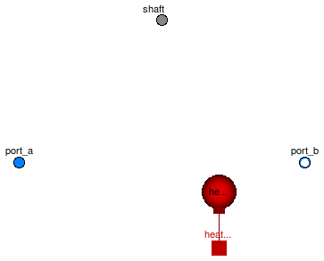
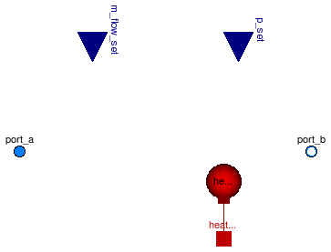
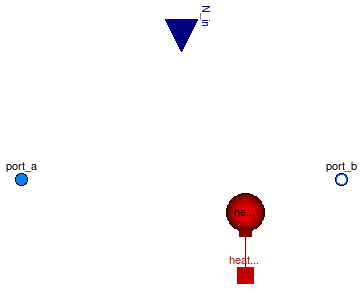

Extends from Modelica.Fluid.Icons.VariantLibrary (Icon for a library that contains several variants of one component).
| Name | Description |
|---|---|
| varying cylindric volume depending on the postition of the piston | |
| Pump | Centrifugal pump with mechanical connector for the shaft |
| ControlledPump | Centrifugal pump with ideally controlled mass flow rate |
| PrescribedPump | Centrifugal pump with ideally controlled speed |
| Base classes used in the Machines package (only of interest to build new component models) |
 Modelica.Fluid.Machines.SweptVolume
Modelica.Fluid.Machines.SweptVolume

Mixing volume with varying size. The size of the volume is given by:
Losses are neglected. The shaft power is completely converted into mechanical work on the fluid.
The flange position has to be equal or greater than zero. Otherwise the simulation stops. The force of the flange results from the pressure difference between medium and ambient pressure and the cross sectional piston area. For using the component, a top level instance of the ambient model with the inner attribute is needed.
The pressure at both fluid ports equals the medium pressure in the volume. No suction nor discharge valve is included in the model.
The thermal port is directly connected to the medium. The temperature of the thermal port equals the medium temperature. The heat capacity of the cylinder and the piston are not includes in the model.
Extends from Modelica.Fluid.Vessels.BaseClasses.PartialLumpedVessel (Lumped volume with a vector of fluid ports and replaceable heat transfer model).
| Type | Name | Default | Description |
|---|---|---|---|
| Area | pistonCrossArea | cross sectional area of pistion [m2] | |
| Volume | clearance | remaining volume at zero piston stroke [m3] | |
| replaceable package Medium | PartialMedium | Medium in the component | |
| Volume | fluidVolume | V | Volume [m3] |
| Ports | |||
| Boolean | use_portsData | true | = false to neglect pressure loss and kinetic energy |
| VesselPortsData | portsData[nPorts] | Data of inlet/outlet ports | |
| Assumptions | |||
| Dynamics | |||
| Dynamics | energyDynamics | system.energyDynamics | Formulation of energy balance |
| Dynamics | massDynamics | system.massDynamics | Formulation of mass balance |
| Heat transfer | |||
| Boolean | use_HeatTransfer | false | = true to use the HeatTransfer model |
| replaceable model HeatTransfer | IdealHeatTransfer | Wall heat transfer | |
| Initialization | |||
| AbsolutePressure | p_start | system.p_start | Start value of pressure [Pa] |
| Boolean | use_T_start | true | = true, use T_start, otherwise h_start |
| Temperature | T_start | if use_T_start then system.T... | Start value of temperature [K] |
| SpecificEnthalpy | h_start | if use_T_start then Medium.s... | Start value of specific enthalpy [J/kg] |
| MassFraction | X_start[Medium.nX] | Medium.X_default | Start value of mass fractions m_i/m [kg/kg] |
| ExtraProperty | C_start[Medium.nC] | fill(0, Medium.nC) | Start value of trace substances |
| Advanced | |||
| Port properties | |||
| MassFlowRate | m_flow_small | system.m_flow_small | Regularization range at zero mass flow rate [kg/s] |
| Type | Name | Description |
|---|---|---|
| VesselFluidPorts_b | ports[nPorts] | Fluid inlets and outlets |
| HeatPort_a | heatPort | |
| Flange_b | flange | translation flange for piston |
model SweptVolume
"varying cylindric volume depending on the postition of the piston"
import Modelica.Constants.pi;
parameter SI.Area pistonCrossArea "cross sectional area of pistion";
parameter SI.Volume clearance "remaining volume at zero piston stroke";
SI.Volume V "fluid volume";
// Mass and energy balance, ports
extends Modelica.Fluid.Vessels.BaseClasses.PartialLumpedVessel(
final fluidVolume = V,
heatTransfer(surfaceAreas={pistonCrossArea+2*sqrt(pistonCrossArea*pi)*(flange.s+clearance/pistonCrossArea)}));
Modelica.Mechanics.Translational.Interfaces.Flange_b flange
"translation flange for piston";
equation
assert(flange.s >= 0, "Piston stroke (given by flange.s) must not be smaller than zero!");
// volume size
V = clearance + flange.s * pistonCrossArea;
0 = flange.f + (medium.p - system.p_ambient) * pistonCrossArea;
// energy balances
Wb_flow = medium.p * pistonCrossArea * (-der(flange.s));
// definition of port pressures
for i in 1:nPorts loop
vessel_ps_static[i] = medium.p;
end for;
end SweptVolume;

This model describes a centrifugal pump (or a group of nParallel pumps) with a mechanical rotational connector for the shaft, to be used when the pump drive has to be modelled explicitly. In the case of nParallel pumps, the mechanical connector is relative to a single pump.
The model extends PartialPump
Extends from Modelica.Fluid.Machines.BaseClasses.PartialPump (Base model for centrifugal pumps).
| Type | Name | Default | Description |
|---|---|---|---|
| replaceable package Medium | PartialMedium | Medium in the component | |
| Characteristics | |||
| Integer | nParallel | 1 | Number of pumps in parallel |
| replaceable function flowCharacteristic | PumpCharacteristics.baseFlow | Head vs. V_flow characteristic at nominal speed and density | |
| AngularVelocity_rpm | N_nominal | Nominal rotational speed for flow characteristic [1/min] | |
| Density | rho_nominal | Medium.density_pTX(Medium.p_... | Nominal fluid density for characteristic [kg/m3] |
| Boolean | use_powerCharacteristic | false | Use powerCharacteristic (vs. efficiencyCharacteristic) |
| replaceable function powerCharacteristic | PumpCharacteristics.quadrati... | Power consumption vs. V_flow at nominal speed and density | |
| replaceable function efficiencyCharacteristic | PumpCharacteristics.constant... | Efficiency vs. V_flow at nominal speed and density | |
| Assumptions | |||
| Boolean | allowFlowReversal | system.allowFlowReversal | = true to allow flow reversal, false restricts to design direction (port_a -> port_b) |
| Boolean | checkValve | false | = true to prevent reverse flow |
| Volume | V | 0 | Volume inside the pump [m3] |
| Dynamics | |||
| Dynamics | energyDynamics | Types.Dynamics.SteadyState | Formulation of energy balance |
| Dynamics | massDynamics | Types.Dynamics.SteadyState | Formulation of mass balance |
| Heat transfer | |||
| Boolean | use_HeatTransfer | false | = true to use a HeatTransfer model, e.g. for a housing |
| replaceable model HeatTransfer | IdealHeatTransfer | Wall heat transfer | |
| Initialization | |||
| AbsolutePressure | p_a_start | system.p_start | Guess value for inlet pressure [Pa] |
| AbsolutePressure | p_b_start | p_a_start | Guess value for outlet pressure [Pa] |
| MassFlowRate | m_flow_start | 1 | Guess value of m_flow = port_a.m_flow [kg/s] |
| Boolean | use_T_start | true | = true, use T_start, otherwise h_start |
| Temperature | T_start | if use_T_start then system.T... | Start value of temperature [K] |
| SpecificEnthalpy | h_start | if use_T_start then Medium.s... | Start value of specific enthalpy [J/kg] |
| MassFraction | X_start[Medium.nX] | Medium.X_default | Start value of mass fractions m_i/m [kg/kg] |
| ExtraProperty | C_start[Medium.nC] | fill(0, Medium.nC) | Start value of trace substances |
| Advanced | |||
| Diagnostics | |||
| Boolean | show_NPSHa | false | = true to compute Net Positive Suction Head available |
| Type | Name | Description |
|---|---|---|
| FluidPort_a | port_a | Fluid connector a (positive design flow direction is from port_a to port_b) |
| FluidPort_b | port_b | Fluid connector b (positive design flow direction is from port_a to port_b) |
| HeatPort_a | heatPort | |
| Flange_a | shaft |
model Pump "Centrifugal pump with mechanical connector for the shaft" extends Modelica.Fluid.Machines.BaseClasses.PartialPump; SI.Angle phi "Shaft angle"; SI.AngularVelocity omega "Shaft angular velocity"; Modelica.Mechanics.Rotational.Interfaces.Flange_a shaft; equation phi = shaft.phi; omega = der(phi); N = Modelica.SIunits.Conversions.to_rpm(omega); W_single = omega*shaft.tau; end Pump;

This model describes a centrifugal pump (or a group of nParallel pumps) with ideally controlled mass flow rate or pressure.
Nominal values are used to predefine an exemplary pump characteristics and to define the operation of the pump. The input connectors m_flow_set or p_set can optionally be enabled to provide time varying set points.
Use this model if the pump characteristics is of secondary interest. The actual characteristics can be configured later on for the appropriate rotational speed N. Then the model can be replaced with a Pump with rotational shaft or with a PrescribedPump.
Extends from Modelica.Fluid.Machines.BaseClasses.PartialPump (Base model for centrifugal pumps).
| Type | Name | Default | Description |
|---|---|---|---|
| replaceable package Medium | PartialMedium | Medium in the component | |
| AbsolutePressure | p_a_nominal | Nominal inlet pressure for predefined pump characteristics [Pa] | |
| AbsolutePressure | p_b_nominal | Nominal outlet pressure, fixed if not control_m_flow and not use_p_set [Pa] | |
| MassFlowRate | m_flow_nominal | Nominal mass flow rate, fixed if control_m_flow and not use_m_flow_set [kg/s] | |
| Boolean | control_m_flow | true | = false to control outlet pressure port_b.p instead of m_flow |
| Boolean | use_m_flow_set | false | = true to use input signal m_flow_set instead of m_flow_nominal |
| Boolean | use_p_set | false | = true to use input signal p_set instead of p_b_nominal |
| Characteristics | |||
| Integer | nParallel | 1 | Number of pumps in parallel |
| replaceable function flowCharacteristic | Modelica.Fluid.Machines.Base... | Head vs. V_flow characteristic at nominal speed and density | |
| AngularVelocity_rpm | N_nominal | 1500 | Nominal rotational speed for flow characteristic [1/min] |
| Density | rho_nominal | Medium.density_pTX(Medium.p_... | Nominal fluid density for characteristic [kg/m3] |
| Boolean | use_powerCharacteristic | false | Use powerCharacteristic (vs. efficiencyCharacteristic) |
| replaceable function powerCharacteristic | PumpCharacteristics.quadrati... | Power consumption vs. V_flow at nominal speed and density | |
| replaceable function efficiencyCharacteristic | PumpCharacteristics.constant... | Efficiency vs. V_flow at nominal speed and density | |
| Assumptions | |||
| Boolean | allowFlowReversal | system.allowFlowReversal | = true to allow flow reversal, false restricts to design direction (port_a -> port_b) |
| Boolean | checkValve | false | = true to prevent reverse flow |
| Volume | V | 0 | Volume inside the pump [m3] |
| Dynamics | |||
| Dynamics | energyDynamics | Types.Dynamics.SteadyState | Formulation of energy balance |
| Dynamics | massDynamics | Types.Dynamics.SteadyState | Formulation of mass balance |
| Heat transfer | |||
| Boolean | use_HeatTransfer | false | = true to use a HeatTransfer model, e.g. for a housing |
| replaceable model HeatTransfer | IdealHeatTransfer | Wall heat transfer | |
| Initialization | |||
| AbsolutePressure | p_a_start | system.p_start | Guess value for inlet pressure [Pa] |
| AbsolutePressure | p_b_start | p_a_start | Guess value for outlet pressure [Pa] |
| MassFlowRate | m_flow_start | 1 | Guess value of m_flow = port_a.m_flow [kg/s] |
| Boolean | use_T_start | true | = true, use T_start, otherwise h_start |
| Temperature | T_start | if use_T_start then system.T... | Start value of temperature [K] |
| SpecificEnthalpy | h_start | if use_T_start then Medium.s... | Start value of specific enthalpy [J/kg] |
| MassFraction | X_start[Medium.nX] | Medium.X_default | Start value of mass fractions m_i/m [kg/kg] |
| ExtraProperty | C_start[Medium.nC] | fill(0, Medium.nC) | Start value of trace substances |
| Advanced | |||
| Diagnostics | |||
| Boolean | show_NPSHa | false | = true to compute Net Positive Suction Head available |
| Type | Name | Description |
|---|---|---|
| FluidPort_a | port_a | Fluid connector a (positive design flow direction is from port_a to port_b) |
| FluidPort_b | port_b | Fluid connector b (positive design flow direction is from port_a to port_b) |
| HeatPort_a | heatPort | |
| input RealInput | m_flow_set | Prescribed mass flow rate |
| input RealInput | p_set | Prescribed outlet pressure |
| Characteristics | ||
| replaceable function flowCharacteristic | Head vs. V_flow characteristic at nominal speed and density | |
model ControlledPump
"Centrifugal pump with ideally controlled mass flow rate"
import Modelica.SIunits.Conversions.NonSIunits.AngularVelocity_rpm;
extends Modelica.Fluid.Machines.BaseClasses.PartialPump(
N_nominal=1500,
N(start=N_nominal),
redeclare replaceable function flowCharacteristic =
Modelica.Fluid.Machines.BaseClasses.PumpCharacteristics.quadraticFlow (
V_flow_nominal={0, V_flow_op, 1.5*V_flow_op},
head_nominal={2*head_op, head_op, 0}));
// nominal values
parameter Medium.AbsolutePressure p_a_nominal
"Nominal inlet pressure for predefined pump characteristics";
parameter Medium.AbsolutePressure p_b_nominal
"Nominal outlet pressure, fixed if not control_m_flow and not use_p_set";
parameter Medium.MassFlowRate m_flow_nominal
"Nominal mass flow rate, fixed if control_m_flow and not use_m_flow_set";
// what to control
parameter Boolean control_m_flow = true
"= false to control outlet pressure port_b.p instead of m_flow";
parameter Boolean use_m_flow_set = false
"= true to use input signal m_flow_set instead of m_flow_nominal";
parameter Boolean use_p_set = false
"= true to use input signal p_set instead of p_b_nominal";
// exemplary characteristics
final parameter SI.VolumeFlowRate V_flow_op = m_flow_nominal/rho_nominal
"operational volume flow rate according to nominal values";
final parameter SI.Height head_op = (p_b_nominal-p_a_nominal)/(rho_nominal*g)
"operational pump head according to nominal values";
Modelica.Blocks.Interfaces.RealInput m_flow_set if use_m_flow_set
"Prescribed mass flow rate";
Modelica.Blocks.Interfaces.RealInput p_set if use_p_set
"Prescribed outlet pressure";
protected
Modelica.Blocks.Interfaces.RealInput m_flow_set_internal
"Needed to connect to conditional connector";
Modelica.Blocks.Interfaces.RealInput p_set_internal
"Needed to connect to conditional connector";
equation
// Ideal control
if control_m_flow then
m_flow = m_flow_set_internal;
else
dp_pump = p_set_internal - port_a.p;
end if;
// Internal connector value when use_m_flow_set = false
if not use_m_flow_set then
m_flow_set_internal = m_flow_nominal;
end if;
if not use_p_set then
p_set_internal = p_b_nominal;
end if;
connect(m_flow_set, m_flow_set_internal);
connect(p_set, p_set_internal);
end ControlledPump;

This model describes a centrifugal pump (or a group of nParallel pumps) with prescribed speed, either fixed or provided by an external signal.
The model extends PartialPump
If the N_in input connector is wired, it provides rotational speed of the pumps (rpm); otherwise, a constant rotational speed equal to n_const (which can be different from N_nominal) is assumed.
Extends from Modelica.Fluid.Machines.BaseClasses.PartialPump (Base model for centrifugal pumps).
| Type | Name | Default | Description |
|---|---|---|---|
| replaceable package Medium | PartialMedium | Medium in the component | |
| Boolean | use_N_in | false | Get the rotational speed from the input connector |
| AngularVelocity_rpm | N_const | N_nominal | Constant rotational speed [1/min] |
| Characteristics | |||
| Integer | nParallel | 1 | Number of pumps in parallel |
| replaceable function flowCharacteristic | PumpCharacteristics.baseFlow | Head vs. V_flow characteristic at nominal speed and density | |
| AngularVelocity_rpm | N_nominal | Nominal rotational speed for flow characteristic [1/min] | |
| Density | rho_nominal | Medium.density_pTX(Medium.p_... | Nominal fluid density for characteristic [kg/m3] |
| Boolean | use_powerCharacteristic | false | Use powerCharacteristic (vs. efficiencyCharacteristic) |
| replaceable function powerCharacteristic | PumpCharacteristics.quadrati... | Power consumption vs. V_flow at nominal speed and density | |
| replaceable function efficiencyCharacteristic | PumpCharacteristics.constant... | Efficiency vs. V_flow at nominal speed and density | |
| Assumptions | |||
| Boolean | allowFlowReversal | system.allowFlowReversal | = true to allow flow reversal, false restricts to design direction (port_a -> port_b) |
| Boolean | checkValve | false | = true to prevent reverse flow |
| Volume | V | 0 | Volume inside the pump [m3] |
| Dynamics | |||
| Dynamics | energyDynamics | Types.Dynamics.SteadyState | Formulation of energy balance |
| Dynamics | massDynamics | Types.Dynamics.SteadyState | Formulation of mass balance |
| Heat transfer | |||
| Boolean | use_HeatTransfer | false | = true to use a HeatTransfer model, e.g. for a housing |
| replaceable model HeatTransfer | IdealHeatTransfer | Wall heat transfer | |
| Initialization | |||
| AbsolutePressure | p_a_start | system.p_start | Guess value for inlet pressure [Pa] |
| AbsolutePressure | p_b_start | p_a_start | Guess value for outlet pressure [Pa] |
| MassFlowRate | m_flow_start | 1 | Guess value of m_flow = port_a.m_flow [kg/s] |
| Boolean | use_T_start | true | = true, use T_start, otherwise h_start |
| Temperature | T_start | if use_T_start then system.T... | Start value of temperature [K] |
| SpecificEnthalpy | h_start | if use_T_start then Medium.s... | Start value of specific enthalpy [J/kg] |
| MassFraction | X_start[Medium.nX] | Medium.X_default | Start value of mass fractions m_i/m [kg/kg] |
| ExtraProperty | C_start[Medium.nC] | fill(0, Medium.nC) | Start value of trace substances |
| Advanced | |||
| Diagnostics | |||
| Boolean | show_NPSHa | false | = true to compute Net Positive Suction Head available |
| Type | Name | Description |
|---|---|---|
| FluidPort_a | port_a | Fluid connector a (positive design flow direction is from port_a to port_b) |
| FluidPort_b | port_b | Fluid connector b (positive design flow direction is from port_a to port_b) |
| HeatPort_a | heatPort | |
| input RealInput | N_in | Prescribed rotational speed [1/min] |
model PrescribedPump "Centrifugal pump with ideally controlled speed"
extends Modelica.Fluid.Machines.BaseClasses.PartialPump;
parameter Boolean use_N_in = false
"Get the rotational speed from the input connector";
parameter Modelica.SIunits.Conversions.NonSIunits.AngularVelocity_rpm N_const = N_nominal
"Constant rotational speed";
Modelica.Blocks.Interfaces.RealInput N_in(unit="1/min") if use_N_in
"Prescribed rotational speed";
protected
Modelica.Blocks.Interfaces.RealInput N_in_internal(unit="1/min")
"Needed to connect to conditional connector";
equation
// Connect statement active only if use_p_in = true
connect(N_in, N_in_internal);
// Internal connector value when use_p_in = false
if not use_N_in then
N_in_internal = N_const;
end if;
// Set N with a lower limit to avoid singularities at zero speed
N = max(N_in_internal,1e-3) "Rotational speed";
end PrescribedPump;